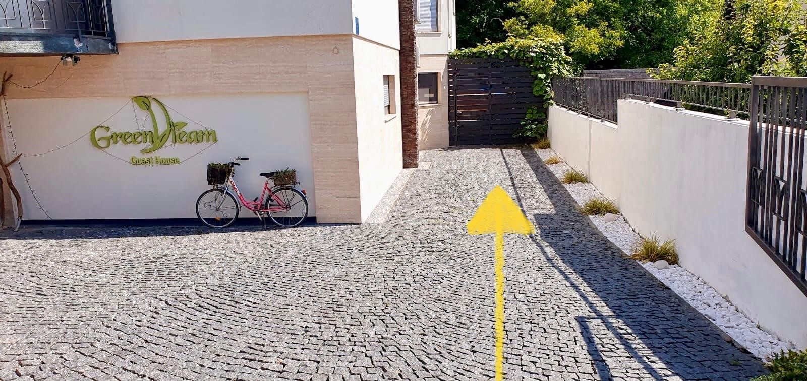

DOBRODOŠLI!
u Green Dream
Guest House
˚˖𓍢ִ໋❁˚
━━━━━━━━━━━━⊱⋆⊰━━━━━━━━━━━━
TOČNA ADRESA:
DVOJKOVIĆEV PUT 16 B, 10 000 ZAGREB, CROATIA
NALAZI SE U ZAPADNOM DIJELU ZAGREBA; ČRNOMEREC
━━━━━━━━━━━━⊱⋆⊰━━━━━━━━━━━━
Ispred apartmana nalazi se besplatno parkirno mjesto.
Ulaz je dolje, nakon parkinga; iza drvene ograde.
Samostalna prijava: poslije 14:00 (14:00)
Ključ je u sefu blizu ulaza u apartman tako da se možete sami prijaviti.
Dobit ćete šifru. Unesite ga, uzmite ključ i nakon toga ponovno unesite kod da biste zatvorili sef.
Samostalna odjava: do 10:00 (10 ujutro)
Nakon dolaska u Apartman svi gosti su dužni predati svoje osobne dokumente radi prijave u Turističkom uredu
(možete mi poslati fotografije dokumenata e-poštom ili WhatsAppom nakon stignuća).
U Hrvatskoj je razvrstavanje otpada obavezno.
Kante za reciklažu (plastika, metal, papir i staklo) su vani, ispod stepenica, blizu vrata/ulaza.
Ostatak nakupljenog smeća iz kuhinje i kupaonice smije se odlagati samo u standardizirane otpadne plave “ZG vreće” (ispod sudopera).
Te vreće idu u crnu kantu za smeće koja se nalazi blizu drugog ulaza u kuću.
Sredstva za čišćenje i perilica za rublje nalaze se u sobi za centralno grijanje (u blizini žute spavaće sobe).
Za perilicu rublja trebate otvoriti ventil za vodu i priključiti struju.
Zabranjeno je dodirivati kotao i puštati djecu u kotlovnicu.
Možete sobu također zaključati.
Bazen je otvoren za korištenje od 9:00 do 21:00 sat.
Dragi gosti, molimo vas da redovito koristite mreže za bazen
kako bi voda bila čista i kako bi sustav filtracije bolje funkcionirao.
Poštujte sigurnosna upozorenja kao što su:
Svi se gosti moraju istuširati prije korištenja bazena
Djeca mlađa od 4 godine trebaju vodootporne pelene u bazenu
Bez skakanja
Party događaji nisu dopušteni. Tiho vrijeme je između 23 sata navečer i 7 sati ujutro.
Hvala unaprijed.
Što se tiče rasporeda spavanja, javite mi ako trebate putni dječji krevetac.
Dobrodošli ste u naš vrt čudesa te da i uživate u igri na našem malom igralištu.
Pazite na prirodu i igračke kako bi i drugi nakon vas uživali.
Tu smo za vas za sva ostala pitanja ili pomoć.
Želimo Vam sretan put i ugodan boravak u Zagrebu.
Helena & Brigić obitelj, Green Dream Zagreb